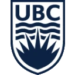
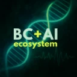
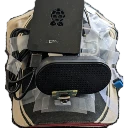
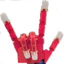
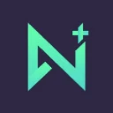

nwHacks 2025 – Genimo
nwHacks 2025
AI + animation tool converting user text into educational animations (Generate + Manim).
Hello! I'm a recent engineering transfer graduate from Langara College, heading to the     
I balance ambitious projects with strong academic performance. I serve as
My goal is to break into AI at the intersection of robotics and quantum computing, by continually learning, building, and shipping things that matter.
Independent / TKS
Jan 2024 – Dec 2024 (1 year ago)
Portable wearable AI assistant (camera, mic, speaker) giving low‑latency scene descriptions & Q/A; core translated to microcontroller (C++ + Edge Impulse).
Team Research
Apr 2024 – Oct 2024 (1 year ago)
Researched mitochondrial theory of aging; built MVP system to help stabilize blood glucose for accessible lifespan improvement; pitched to 3 VCs.
Google Canada Challenge Winner
Dec 2023 – Aug 2024 (1 year ago)
Personalized announcements + question answering by integrating Gemini with internal docs (RAG) for sales teams; selected top 3/100+ & ranked #1 in final judging by the Global Head of Partnerships with Google Canada.
buildspace / Community Meetup Demo
Jun 2024 – Jul 2024 (1 year ago)
Chrome extension integrating Gemini with Google Calendar to plan weeks & schedule events via natural language; demoed at Vancouver AI Community Meetup.
Interactive AI game resembling Pokémon with real‑world items; placed 2nd among 100+ participants.
AI + animation tool converting user text into educational animations (Generate + Manim).
Calendar + AI chatbot for intelligent time management integrating Google Calendar.
282/3077 worldwide; 3rd school (Gr.11).
Funding for JARVIS project.